대전 주요 관광지
대전의 꼭 가봐야 할
관광명소를 소개합니다
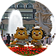
중부 이남의 최대규모인 종합 테마파크
오-월드오!월드는 “주랜드+플라워랜드+조이랜드+버드랜드”가 복합적으로 어우러진 온 가족이 함께 즐길수 있는 종합테마 공원으로 2002년 5월5일 개장한 대전동물원과 2009년 5월 1일 개장한 플라워랜드를 통합하였으며, 2016년 9월 30일 버드랜드를 오픈하여, 총 783,897㎡(동물원 608,283 ㎡)로 확장된 중부권 이남 최대규모로 새롭게 태어나고 있다...
위치 : 중구 사정공원로 70 (사정동)
문의처 : 042-580-4820
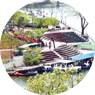
전국 유일의 ‘효’ 테마공원
뿌리공원뿌리공원은 모든 사람들에게 자신의 뿌리를 알게하여 경로효친사상을 함양시키고 한겨레의 자손임을 일깨우기 위하여 세계 최초로 성씨를 상징하는 조형물을 세운 충효의 산 교육장이다.
자신의 뿌리를 되찾을 수 있는 성씨별 조형물과 사신도 및 12지지를 형상화한 뿌리 깊은 샘물, 각종행사를 할 수 있는 수변무대, 잔디광장과 공원을 한눈에...
위치 : 중구 뿌리공원로 79
문의처 : 042-581-4445
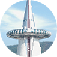
과학을 주제로 한 테마공원
엑스포과학공원엑스포과학공원은 1993년에 개최되었던 대전세계박람회인 엑스포가 끝난 뒤 그 시설과 부지를 국민과학교육의 장으로 활용하기 위하여 조성된 과학공원이다. 영화를 보면서 의자가 움직이는 시뮬레이션 영상관과 전기 에너지관 등 볼거리가 많다.
엑스포과학공원의 상징탑인 한빛탑에서 대전시의 주요지역을 한눈에 조망 할 수 있으며...
위치 : 유성구 대덕대로 480
문의처 : 042-250-1111
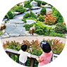
중부권 최대의 수목원
한밭수목원한밭수목원은 정부대전청사와 엑스포과학공원의 중앙부분에 위치하고 있고 대전예술의전당, 평송청소년문화센터, 시립미술관, 이응노미술관 등이 있어 문화 예술의 메카이며, 수목원과 어우러져 문화가 가장 잘 갖추어져 있는 곳이다.
도심 속의 한밭수목원은 정부대전청사와 과학공원의 녹지축을 연계한 전국 최대의 도심 속 인공 수목원으로 ...
위치 : 서구 둔산대로 169
문의처 : 042-270-8452
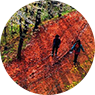
호젓하면서 비범한 산길
계족산 황톳길계족산 숲속 황톳길은 국내 그 어느 곳에서도 경험할 수 없는 자연이 주는 건강을 경험할 수는 세계 유일의 공간으로. 대전을 방문하게 되면 계족산, 대청댐과 더불어 반드시 가보아야 할 관광명소이다.
해발 200M ~ 300M에서 펼쳐지는 14km의 짜릿한 황톳길을 걷거나 뛰다 보면 몸과 마음의 건강을 찾을 수 있을 것 같으며 봄, 가을에는 자전거를 타며...
위치 : 대덕구 대청로
문의처 : 042-623-9909
걸으며 사색하는 그림 속 호수, 대청호반
대청호반대청호는 1980년 대청댐이 완공되면서 조성되어 대전광역시·청주시의 식수와 생활용수·공업용수를 공급하고 있다. 호수 위로 해발고도 200∼300m의 야산과 수목이 펼쳐져 드라이브 코스로 잘 알려져 있다.
철새와 텃새가 많이 날아들어 여름에는 상류에서 백로를 쉽게 볼 수 있다. 전망대에 오르면 주변 경관이 한눈에 내려다보이며...
위치 : 대전시 대덕구 대청로
문의처 : 042-930-7240
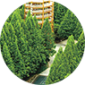
자연과 하나되는 메타세콰이아 숲
장태산휴양림장태산자연휴양림은 대전광역시 서구 장안동에 위치하고 있으며, 주변 경관이 수려하여 대전관광명소 12선의 한곳이기도 합니다.
이곳은 국내 유일의 메타세퀘이아 숲이 울창하게 형성되어 있어 이국적인 경관과 더불어 가족단위의 이용객이 산림욕을 즐기는 휴양림으로 유명하다 장태산자연휴양림은 전국 최초의 민간인이 조성, 운영하여 왔으나 ...
위치 : 서구 장안로
문의처 : 042-270-7883
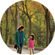
133km, 300리를 두르는 길
대전둘레산길대전둘레산길은 산들이 길게 뻗어 대전을 감싸고 그 사이로 3대 하천인 대전천, 유등천, 갑천이 차례로 만나 금강으로 흐른다.
시내에서 바라보면 서쪽으로 금남정맥의 명산 계룡산을 배경으로 금수봉, 도덕봉이 삽재 건너 갑하산, 우산봉으로 이어져 북쪽의 금병산으로 흐른다. 동으로는 계족의 능선이 길게 뻗어 식장산에 ...
위치 : 중구 보문산 공원로
문의처 : 042-270-5544
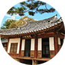
자연스럽지 아니한 家
동춘당동춘당은 동춘당 송준길 선생이 아버지가 처음 세웠던 건물을 옮겨지은 것이다. 동춘이란 ‘살아 움직이는 봄과 같아라’ 는 뜻으로 선생은 이곳에서 독서와 교육을 하면서 인재를 양성하고 회덕향약을 만들었다.
국가지정문화재 보물 제209호인 동춘당은 우암 송시열이 쓴 현판이 걸려 있다. 구조는 비교적 간소하고 규모도 과히 크지 않다. 오른쪽 4칸이 대청이 ...
위치 : 대덕구 동춘당로 80
문의처 : 042-607-6575
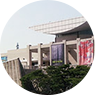
사계절 바탕색이 바뀌다
대전문화예술단지대전문화예술단지은 대전예술의 전당, 시립미술관, 이응노미술관으로 이어지는 문화벨트 지역 예술의 전당 아트홀은 1,546석의 객석과 300명이 동시출연 가능한 대규모 공연장으로 그랜드오페라·발레·뮤지컬 등 종합문화예술공간이며. 시립미술관은 여유롭고 깊이 있는 삶을 공유하는데 품격을 더해 주는 곳.
이응노 미술관은 지역이 낳은 세계적인 작가 고암 ...
위치 : 서구 둔산대로 169
문의처 : 042-270-8333
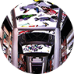
청춘과 문화의 놀이터
으능정이문화의거리으능정이 문화의거리은 60년대부터 80년대까지 한때 중부권의 행정과 상권·전통문화의 메카로 불리었던 이곳이 지금은 문화예술 거리로 새롭게 떠오르고 있다 .
화랑·공연장·소극장·전시 및 공연시설·화랑·표구사·화실·도예점·골동품점 등 문화예술 관련업종 150여 업소가 성업 중이며, 으능정이 페스티벌. 청소년 마임페스티벌, 문화예술거리축제 등 다양한 축제가 열린다.
위치 : 중구 중앙로 170
문의처 : 042-252-7100
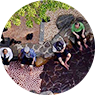
몸으로 마시는 보약
유성온천유성온천거리에는 눈을 닮은 하얀 꽃잎이 아름다운 이팝나무가 가로수로 많이 심어져 있고, 눈꽃거리가 조성되어 매우 아름답다.
지하 200M에서 끌어올린 41~43도를 유지하는 100% 온천수에 80명이 발을 담글 수 있는 두 개의 족욕탕과 수로시설을 갖추고 있는 족욕체험장이 무료로 개방되어 있어 이곳에 오는 관광객은 물론 이곳 주민들까지 늦은시간임에도 이용이 많다.
위치 : 유성구 봉명동 574
문의처 : 042-611-2114